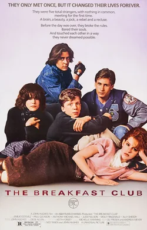

Explore film ↗The Breakfast Club
John Hughes
DIRECTOR PROFILE
Jonathan Wilden Hughes Jr. (February 18, 1950 – August 6, 2009) was an American filmmaker, writer, and producer.
LIFE & CAREER
Jonathan Wilden Hughes Jr. (February 18, 1950 – August 6, 2009) was an American filmmaker, writer, and producer. He is best known for writing, directing, and producing the films Sixteen Candles (1984), The Breakfast Club (1985), Weird Science (1985), Ferris Bueller's Day Off (1986), Planes, Trains and Automobiles (1987), and Uncle Buck (1989), in addition to writing the films Pretty in Pink (1986), National Lampoon's Christmas Vacation (1989), Home Alone (1990), 101 Dalmatians (1996), and Flubber (1997). Widely considered an icon of the 1980s whose coming-of-age stories captured the teenage experience, Hughes set most of his films in Chicago, where he spent his teenage years.
Adapted excerpt from Wikipedia, CC BY-SA 4.0. Pronunciation notes omitted.
Read the full biographyImage: PEOPLE Magazine. Source & rights: Fair use ↗.
Profile reference: Director background ↗
Open this director checklist ↗
A selection of this director’s films available in the archive.

Explore film ↗John Hughes